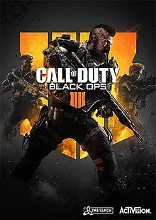
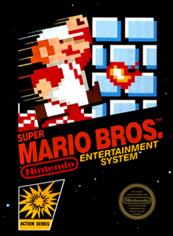

Game Life
SAGAS

Las sagas de videojuegos son las cuales tienen una historia;
La cual habla de los protagonistas ó sobre la historia principal que veremos en el desenlace del juego.
En este caso empezaremos por Grand Theft Auto 5 (GTA V).
Esta es la quinta edición de la franquicia Rockstar Games, pero esta franquicia tiene más aparte de las principales 5 ediciones de GTA como son:
- San Andreas
- Vice City
- Advance
ARMAS

En los videojuegos de armas se usan estrategia para ganar contrincante con un arma. Puedes juagr en equipo ó solitario depende de tu forma de jugar.
En este caso podemos encontrar Call Of Duty Black Ops IV.
Tiene modo en solitario,
punto caliente y el modo de juego mas querido Zombis. Se pueden encontrar muchas versiones mas aqui las 3 mas populares:
- Call of Duty: WWII
- Call of Duty: Black Ops 3
- Call of Duty: Black Ops
DEPORTES
En los videojuegos de deportes el sentido es poder avanzar con tu personaje en tu carrera y de disfrutar con tus amigos jugando en equipo ó en contra.
En este caso podemos encontrar la 2K19 ultima saga de los videojuegos de Basketball. Prodemos ver mi carrera a la hora de jugarlo por primera vez. Entre otros juegos relcionados como estan:
- FIFA 19
- MADDEN NFL 2018
- RBI Baseball 2018
CLASICOS

En los videojuegos clasicos hablamos y encontramos todos esos juegos que nos dan nostalgia de nuestra infancia ó el tiempo que le dedicabamos a ese juego.
En este caso podemos encontrar Super Mario Bros. El cual la mayoria de los amantes de los juegos han jugado. Veremos algunos juegos que llegan a hacer leyendas para cierto grupo de amantes a los videojuegos:
- Pac-Man
- Legend Of Zelda
- Tetris